대기환경기사 (2009-03-01 기출문제)
1과목: 대기오염 개론
1. 다음 중 CO에 관한 설명으로 가장 거리가 먼 것은?
- CO는 다른 물질에 대한 흡착현상을 거의 나타내지 않으며, 유해한 화학반응 또한 거의 일으키지 않는다.
- CO의 자연적 발생원에는 화산폭발, 테르펜의 산화, 클로로필의 분해 등이 있다.
- 지구의 위도별 CO 농도는 남위 50도 부근에서 최대치를 보인다.
- 도시 대기중의 CO 농도가 높은 것은 연소 등에 의해 배출량은 많은 반면, 토양면적 등의 감소에 따라 제거능력이 감소하기 때문이다.
(정답률: 72%)

2. 벤젠에 관한 설명으로 옳지 않은 것은?
- 체내에 흡수된 벤젠은 지방이 풍부한 피하조직과 골수에서 고농도로 축적되어 오래 잔존할 수 있다.
- 체내에서 마뇨산(Huppuric acid)으로 대사하여 소변으로 배설된다.
- 비점은 약 80℃ 정도이고, 체내 흡수는 대부분 호흡기를 통하여 이루어 진다.
- 벤젠 폭로에 의해 발생되는 백혈병은 주로 급성 골수아성 백혈병(acute myeloblasticleukemia)이다.
(정답률: 80%)
3. 등압선이 곡선인 경우, 원심력, 기압경도력, 전향력의 세 힘이 평형을 이루는 상태에서 등압선을 따라 부는 바람을 무엇이라 하는가?
- 지균풍
- 코리올리풍
- 경도풍
- 마찰풍
(정답률: 83%)
4. 오염물질에 관한 다음 설명 중 가장 거리가 먼 것은?
- PAN은 Peroxy Acetyl Nitrate 의 약자이며, CH3COOONO2의 분자식을 갖는다.
- PAN은 PBN(Peroxy Benzoyl Nitrate)보다 100배 이상 눈에 강한 통증을 주며, 빛을 흡수시키므로 가시거리를 감소시킨다.
- 오존은 섬모운동의 기능장애를 일으키며, 염색체 이상이나 적혈구의 노화를 초래하기도 한다.
- R기가 propionyl 기이면, PPN(Peroxy Propionyl Nitrate)이 된다.
(정답률: 80%)
5. Sutton의 확산식에서 지표고도에서 최대오염이 나타나는 풍하측 거리(m)는? (단, ky = kz = 0.07, He = 155m, 2/(2-n)=1.14이다.)
- 약 3950m
- 약 4250m
- 약 5280m
- 약 6510m
(정답률: 43%)
6. 다음은 어떤 지역의 고도에 따른 대기의 온도변화를 나타낸 것이다. 주로 침강역전 (Subsidence Inversion)에 해당하는 부분은?
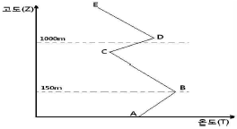
- AB 구간
- BC 구간
- CD 구간
- DE 구간
(정답률: 69%)
7. 대기오염원의 영향을 평가하는 방법 중 분산모델에 관한 설명으로 가장 거리가 먼 것은?
- 지형 및 오염원의 조업조건에 영향을 받는다.
- 시나리오 작성이 곤란하고, 미래예측이 어렵다.
- 먼지의 영향평가는 기상의 불확실성과 오염원이 미확인인 경우에 문제점을 가진다.
- 오염물의 단기간 분석시 문제가 된다.
(정답률: 72%)
8. 1시간에 10000대의 차량이 고속도로 위에서 평균시속 80km로 주행되며, 각 차량의 평균탄화수소 배출률은 0.02g/s 이다. 바람이 고속도로와 측면 수직방향으로 5m/s로 불고 있다면 도로지반과 같은 높이의 평탄한 지형의 풍하 500m 지점에서의 지상오염농도(㎍/m3)는? (단, 대기는 중립상태이며, 풍하 500m에서의 δz = 15m,
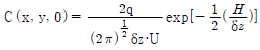
를 이용)- 26.6 ㎍/m3
- 34.1 ㎍/m3
- 42.4 ㎍/m3
- 51.2 ㎍/m3
(정답률: 64%)
9. 굴뚝에서 배출되는 연기모양 중 원추형에 관한 설명으로 가장 적합한 것은?
- 수직온도경사가 과단열 적이고, 난류가 심할 때 주로 발생한다.
- 지표역전이 파괴되면서 발생하며 30분 정도 이상은 지속하지 않는 경향이 있다.
- 연기의 상하부분 모두 역전인 경우 발생한다.
- 구름이 많이 낀 날에 주로 관찰된다.
(정답률: 76%)
10. 가우시안 모델에 관한 설명 중 가장 거리가 먼 것은?
- 주로 평탄지역에 적용하도록 개발되어 왔으나, 최근 복잡지형에도 적용이 가능하도록 개발되고 있다.
- 간단한 화학반응을 묘사할 수 있다.
- 점오염원에서는 모든 방향으로 확산되어가는 plume은 동일하다고 가정하여 유도한다.
- 장, 단기적인 대기오염도 예측에 사용이 가능하다.
(정답률: 68%)
11. 다음 설명하는 오염물질로 가장 적합한 것은?
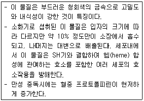
- 납
- 수은
- 크롬
- 알루미늄
(정답률: 67%)
12. 다음 중 염소 또는 염화수소 배출 관련업종으로 가장 거리가 먼 것은?
- 소오다 공업
- 농약 제조업
- 화학 공업
- 시멘트 제조업
(정답률: 75%)
13. 산성비와 관련된 다음 설명 중 가장 거리가 먼 것은?
- 산성비란 보통 빗물의 pH가 5.6보다 낮게 되는 경우를 말하는데, 이는 자연상태에 존재하는 CO2가 빗방울에 흡수되었을 때의 pH를 기준으로 한 것이다.
- 산성비는 인위적으로 배출된 SOx 및 NOx 화합물질이 대기중에서 황산 및 질산으로 변환되어 발생한다.
- 산성비가 토양에 내리면 토양은 산적 성격이 약한 교환기부터 순서적으로 Ca2+, Mg2+, Na+, K+ 등의 교환성 염기를 방출하고, 그 교환자리에 H+가 흡착되어 치환된다.
- 산성비 방지를 위한 국제적인 노력으로 국가간 장거리 이동 대기오염조약인 몬트리올 의정서가 채택되었다.
(정답률: 77%)
14. 각 오염물질에 관한 설명으로 거리가 먼 것은?
- 포스겐은 수분이 있으면 가수분해하여 염산이 생기므로 금속을 부식시킨다.
- 오존은 타이어나 고무절연제 등 고무제품에 균열을 일으키기도 한다.
- 시안화 수소는 무색 투명한 액체로 복숭아 씨 냄새 비슷한 자극취를 내며, 비중은 약 0.7 정도이다.
- 포스겐(CHCl2)은 화학반응성, 인화성, 폭발성 및 부식성이 강한 청록색의 기체이다.
(정답률: 44%)
15. 바람장미에 관한 다음 설명 중 옳지 않은 것은?
- 대기오염물질의 이동방향은 주풍과 같은 방향이며, 풍속은 막대 날개의 길이로 표시한다.
- 방향량(Vector)은 관측된 풍향별 회수를 백분율로 나타낸 값이다.
- 주풍은 가장 빈번히 관측된 풍향을 말하며, 막대의 길이를 가장 길게 표시한다.
- 풍속이 0.2m/s 이하일 때를 정온(Calm)상태로 본다.
(정답률: 65%)
16. 다음 중 오존층 보호를 위한 국제 협약만으로만 옳게 연결된 것은?
- 바젤협약 - 비엔나협약
- 오슬로협약 - 비엔나협약
- 비엔나협약 - 몬트리올의정서
- 몬트리올의정서 - 람사협약
(정답률: 62%)
17. 실내공기에 영향을 미치는 오염물질에 관한 설명 중 옳지 않은 것은?
- 석면은 자연계에 존재하는 유화화된 규산염 광물의 총칭이고, 미국에서 가장 일반적인 것으로는 아크티놀라이트(백석면)가 있다.
- 석면의 발암성은 청석면＞아모싸이트＞온석면 순이다.
- Rn - 222의 반감기는 3.8일이며, 그 남핵종도 같은 종류의 알파선을 방출하지만 화학적으로는 거의 불활성이다.
- 우라늄과 라듐은 Rn - 222의 발생원에 해당된다.
(정답률: 64%)
18. 질소산화물(NOx)에 의한 피해 및 영향으로 가장 거리가 먼 것은?
- NO2의 광화학적 분해작용으로 대기 중의 O3 농도가 증가하고 HC가 존재하는 경우에는 somg를 생성시킨다.
- NO2는 가시광선을 흡수하므로 0.25ppm 정도의 농도에서 가시거리를 상당히 감소시킨다.
- NO2는 습도가 높은 경우 질산이 되어 금속을 부식시키며 산성비의 원인이 된다.
- 인체에 미치는 영향 분석 시 동물을 사용한 연구결과에 의하면 NO2는 주로 위장 장애현상을 초래한다.
(정답률: 50%)
19. 2000m에서 대기압력(최초기압)이 860mbar, 온도가 5℃, 비열비 K가 1.4일 때 온위(Potential Temperature)는? (단, 표준압력은 1000mbar)
- 약 284K
- 약 290K
- 약 294K
- 약 309K
(정답률: 65%)
20. 대기오염물의 분산과정에서 최대 혼합깊이(Maximum mixing depth)를 가장 적합하게 표현한 것은?
- 열부상 효과에 의한 대류혼합층의 높이
- 풍향에 의한 대류혼합층의 높이
- 기압의 변화에 의한 대류혼합층의 높이
- 오염물간 화학반응에 의한 대류혼합층의 높이
(정답률: 63%)
2과목: 연소공학
21. Propane의 최소산소농도(MOC)는? (단, Propane의 폭발하한계는 2.1 vol% 이다.)
- 6.3vol%
- 10.5vol%
- 19.6vol%
- 24.6vol%
(정답률: 70%)
22. 열생성 NOx(Thermal NOx)를 억제하는 연소방법에 관한 설명으로 가장 거리가 먼 것은?
- 희박예혼합연소: 당량비를 높여 NOx 발생온도를 현저히 낮추어(2000K 이하) propmpt NOx로의 전환을 유도한다.
- 화염형상의 변경: 화염을 분할하거나 막상으로 얇게 늘려서 열손실을 증대시킨다.
- 완만혼합: 연료와 공기의 혼합을 완만하게 하여 연소를 길게 함으로써 화염온도의 상승을 억제한다.
- 배기재순환: 팬을 써서 굴뚝가스를 로의 상부에 피드백시켜 최고 화염온도와 산소농도로 억제한다.
(정답률: 73%)
23. COM 연소장치에 대한 설명 중 가장 거리가 먼 것은?
- 중유전용 보일러의 경우 별도의 개조없이 COM을 연료로서 용이하게 사용할 수 있다.
- 화염길이는 미분탄 연소에 가까운 반면, 화염안정성은 중유연소에 가깝다.
- 연소실 내의 체류시간의 부족, 분사변의 폐쇄와 마모, 재의 처리 등에 주의할 필요학 있다.
- 중유보다 미립화 특성이 양호하다.
(정답률: 43%)
24. 등가비(Equivalence Ratio, Φ)와 공기비(λ)와의 관계로 옳은 것은?
- Φ = 2λ
- Φ = (1- λ)
- Φ·λ= 1
- Φ = (λ/2)λ
(정답률: 50%)
25. 연료에 관한 다음 설명 중 가장 거리가 먼 것은?
- 연료비는 탄화도의 정도를 나타내는 지수로서, 고정탄소/휘발분 으로 계산된다.
- 석유계 액체연료는 고위발열량이 10000-12000 kcal/kg정도이고, 메탄올과 같이 산소를 함유한 연료의 경우 발열량은 일반 석유계 액체연료보다 높아진다.
- 일산화탄소의 고위발열량은 3000kcal/Nm3정도이며, 프로판과 부탄보다 발열량이 낮다.
- LPG는 상온에서 압력을 주면 용이하게 액화되는 석유계의 탄화수소를 말한다.
(정답률: 43%)
26. 다음 중 폭발성 혼합가스의 연소범위(L)를 구하는 식으로 옳은 것은? (단, nn: 각 성분 단일의 연소한계(상한 또는 하한) pn: 각 성분 가스의 체적(%))
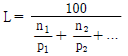
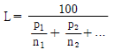
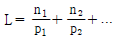
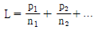
(정답률: 70%)
27. 다음은 화격자의 종류 중 폰 롤 시스템에 관한 설명이다. ( )안에 들어갈 말로 적합하지 않은 것은?
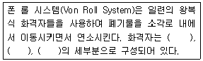
- 건조 화격자
- 회전 화격자
- 연소 화격자
- 후연소 화격자
(정답률: 60%)
28. 액체연료의 대부분은 원유의 정제에 의해 만드는 석유계 연료로서 많은 탄화수소의 혼합물들이다. 다음 탄화수소의 분류 중 알카인(Alkyne)계의 일반식은?
- CnH2n
- CnH2n+2
- CnH2n-2
- CnH2n-6
(정답률: 49%)
29. 자동차 내연기관의 공연비와 유해가스 발생 농도와의 일반적인 관계를 옳게 설명한 것은?
- 공연비를 이론치보다 높이면 NOx는 감소하고, CO, HC는 증가한다.
- 공연비를 이론치보다 낮추면 NOx는 감소하고, CO, HC는 증가한다.
- 공연비를 이론치보다 높이면 NOx, CO, HC 모두 증가한다.
- 공연비를 이론치보다 낮추면 NOx, CO, HC 모두 감소한다.
(정답률: 64%)
30. 기체연료의 일반적 특징으로 가장 거리가 먼 것은?
- 저발열량의 것으로 고온을 얻을 수 있고, 전열효율을 높일 수 있다.
- 연소효율이 높고 검댕이 거의 발생하지 않으나, 많은 과잉공기가 소모된다.
- 저장이 곤란하고 시설비가 많이 든다.
- 연료 속에 황이 포함되지 않은 것이 많고, 연소조절이 용이하다.
(정답률: 59%)
31. 가솔린엔진과 디젤엔진의 상대적인 특성을 비교한 내용으로 틀린 것은?
- 가솔린엔진은 예혼합연소, 디젤엔진은 확산연소에 가깝다.
- 가솔린엔진은 연소실 크기에 제한을 받는 편이다.
- 디젤엔진은 공급공기가 많기 때문에 배기가스 온도가 낮아 엔진 내구성에 유리하다.
- 디젤엔진은 가솔린엔진에 비하여 자기착화온도가 높아 검댕, CO, HC의 배출농도 및 배출량이 많다.
(정답률: 54%)
32. 다음 중 건타입(Gun type)버너에 관한 설명으로 틀린 것은?
- 형식은 유압식과 공기분무식을 합한 것이다.
- 유압은 보통 7kg/cm2이상이다.
- 연소가 양호하고, 전자동 연소가 가능하다.
- 유량조절 범위가 넓어 대용량에 적합하다.
(정답률: 67%)
33. 화염으로부터 열을 받으면 가연성 증기가 발생하는 연소로써, 휘발유, 등유, 알콜, 벤젠 등의 액체연료의 연소형태는?
- 표면연소
- 자기연소
- 증발연소
- 발화연소
(정답률: 57%)
34. 보일러에서 저온부식을 방지하기 위한 방법으로 가장 거리가 먼 것은?
- 과잉공기를 줄여서 연소한다.
- 가스온도를 산노점 이하가 되도록 조업한다.
- 연료를 전처리하여 유황분을 제거한다.
- 장치표면을 내식재료로 피복한다.
(정답률: 60%)
35. 유류연소 버너에 관한 설명으로 틀린 것은?
- 유압분무식 버너: 연료의 점도가 크거나, 유압이 5kg/cm2 이하가 되면 분무화가 불량하다.
- 회전식 버너: 연료유 분사유량은 직결식의 경우 1000L/hr 이하이다.
- 고압기류 분무식 버너: 분무각도는 30°정도로 작은 편이며, 분무에 필요한 1차 공기량은 이론연소공기량의 7-12% 정도이다.
- 저압기류 분무식 버너: 비교적 좁은 각도의 긴 화염이며, 용량은 2000-3000L/hr로 주로 대형 가열로에 이용된다.
(정답률: 53%)
36. 통풍방식 중 흡인통풍에 관한 설명으로 가장 거리가 먼 것은?
- 노내압이 부압으로 냉기침입의 우려가 있다.
- 송풍기의 점검 및 보수가 어렵다.
- 연소용 공기를 예열할 수 있다.
- 굴뚝의 통풍저항이 큰 경우에 적합하다.
(정답률: 49%)
37. C: 85%, H: 15%의 액체 연료를 100kg/h로 연소하는 경우, 연소 배출가스의 분석결과가 CO2: 12%, O2: 4%, N2: 84%이었다면 실제 연소용 공기량은? (단, 표준상태 기준)
- 약 1160 Sm3/h
- 약 1410 Sm3/h
- 약 1620 Sm3/h
- 약 1730 Sm3/h
(정답률: 56%)
38. propane과 ethane의 혼합가스 1Nm3을 완전연소 시킨 결과 배기가스 중 CO2 생성량은 2.6Nm3이었다. 이 혼합가스 중 ethane : propane 의 몰비(mole ratio)는?
- 3 : 2
- 1 : 3
- 2 : 3
- 3 : 1
(정답률: 62%)
39. 연료 1kg 중 수소 20%, 수분 20% 인 액체연료의 고위발열량이 1⑤00 kcal/kg 일 때, 저위발열량(kcal/kg)은?
- 8800
- 9120
- 9300
- 9520
(정답률: 61%)
40. 일산화탄소의 이론적 완전연소 시 (CO2)max(%)는?
- 34.7%
- 37.7%
- 39.5%
- 59.5%
(정답률: 54%)
3과목: 대기오염 방지기술
41. 전기집진장치의 특성에 관한 설명으로 가장 거리가 먼 것은?
- 전압변동과 같은 조건변동에 쉽게 적응하기 어렵다.
- 다른 고효율 집진장치에 비해 압력손실(10-20mmH2O)이 적어 소요동력이 적은편이다.
- 대량가스 및 고온(350℃ 정도)가스의 처리도 가능하다.
- 입자의 하전을 균일하게 하기 위해 장치내부의 처리가스 속도는 보통 7-15m/s를 유지하도록 한다.
(정답률: 43%)
42. 냄새물질에 관한 다음 설명 중 가장 거리가 먼 것은?
- 물리화학적 자극량과 인간의 감각강도 관계는 Ranney법칙과 잘 맞다.
- 골격이 되는 탄소수는 저분자일수록 관능기 특유의 냄새가 강하고 자극적이나 8-13에서 가장 향기가 강하다.
- 분자내 수산기의 수는 1개 일 때 가장 강하고 수가 증가하면 약해져서 무취에 이른다.
- 불포화도가 높으면 냄새가 보다 강하게 난다.
(정답률: 61%)
43. 유수식 세정집진장치의 종류와 가장 거리가 먼 것은?
- 가스분수형
- 스쿠르형
- 임펠러형
- 로타형
(정답률: 59%)
44. 황함유량이 1.5%인 중유를 10ton/h로 연소하는 보일러에서 배기가스를 NaOH 수용액으로 처리한 후 황성분을 전량 Na2SO3로 회수할 경우, 이 때 필요한 NaOH의 이론량은? (단, 황성분은 전량 SO2로 전환된다고 한다.)
- 375kg/h
- 550kg/h
- 650kg/h
- 750kg/h
(정답률: 59%)
45. 입자상 물질을 여과방식에 의해 집진하고자 한다. 0.1㎛이하의 미세입자는 주로 어떤 작용에 의해 제거되는가?
- 직접차단
- 충돌
- 확산
- 중력
(정답률: 70%)
46. 헨리법칙을 이용하여 유도된 총괄물질이동계수와 개별물질이동계수와의 관계를 옳게 나타낸 식은? (단, KG: 기상총괄물질이동계수, kl: 액상물질이동계수, kg: 기상물질이동계수, H: 헨리정수)
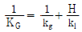
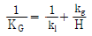
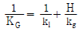
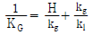
(정답률: 72%)
47. 유해가스 흡수장치 중 충전탑에 관한 설명으로 틀린 것은?
- 흡수액을 통과시키면서 유량속도를 증가시키면 충전층내의 액보유량이 증가하는 점을 편류점(Channelling point)이라 한다.
- 충전탑의 원리는 충전물질의 표면을 흡수액으로 도포하여 흡수액의 엷은 층을 형성시킨 후 가스와 흡수액을 접촉시켜 흡수시킨다.
- 액분산형 가스흡수장치에 속하며, 효율 증대를 위해서는 가스의 용해도를 증가시키고, 액가스비를 증가시켜야 한다.
- 온도변화가 큰 곳에는 적응성이 낮고, 희석열이 심한 곳에는 부적합하다.
(정답률: 66%)
48. 응집(Coagulation)에 관한 설명으로 가장 거리가 먼 것은?
- 응집은 먼지입자들이 서로 접촉하여 달라붙거나 합체하는 현상을 의미한다.
- 브라운 운동이 대기의 온도와 관련될 때 일어나는 응집현상을 열응집(Thermal Coagulation)이라 한다.
- 중력응집(Gravitational Coagulation)은 크기가 다른 입자들의 침전속도가 다르기 때문에 일어나는 응집으로 강우에 큰 영향을 미친다.
- 큰 입자와 작은 입자간의 응집현상은 쉽게 응집되지 않으므로 장기간에 걸쳐 진행되고, 바람부는 날의 구름속의 입자는 맑은날보다 더 응집이 어렵다.
(정답률: 53%)
49. 악취의 물리적 특성에 관한 설명으로 틀린 것은?
- 증기압이 높은 물질일수록 일반적으로 악취는 더 강하다고 볼 수 있다.
- 활성탄 같은 흡착제는 악취를 일으키는 물질을 대량으로 흡착할 수 있다.
- 악취는 통상 분자내부 진동에 의존한다고 가정되므로 라만변이와 냄새는 서로 관련이 있다.
- Paraffin 과 CS2와 같은 악취물질은 적외선을 강하게 흡수한다.
(정답률: 49%)
50. 입자상 물질에 대한 다음 설명 중 가장 거리가 먼 것은?
- 공기동역학경은 Stoke경과 달리 입자밀도를 1g/cm3으로 가정함으로써 보다 쉽게 입경을 나타낼 수 있다.
- 비구형입자에서 입자의 밀도가 1보다 클 경우 공기동력학경은 stokes경에 비해 항상 크다고 볼 수 있다.
- 직경 d인 구형입자의 비표면적은 d/6이다.
- cascade impactor는 관성충돌을 이용하여 입경을 간접적을 측정하는 방법이다.
(정답률: 69%)
51. VOCs를 98% 이상 제어하기 위한 VOCs 제어기술과 가장 거리가 먼 것은?
- 후연소
- 루우프(loop) 산화
- 재생(Regenerative) 열산화
- 저온(Cryogenic) 응축
(정답률: 66%)
52. 유해물질 제거를 위한 흡수장치 중 다공판탑에 관한 설명으로 가장 거리가 먼 것은?
- 판간격은 보통 40cm이고, 액가스비는 0.3-5L/m3 정도이다.
- 압력손실이 20mmHO 정도이고, 가스량의 변동이 심한 경우에도 용이하게 조업할 수 있다.
- 판수를 증가시키면 고농도 가스도 일시 처리가 가능하다.
- 가스속도는 0.3-1m/s 정도이다.
(정답률: 58%)
53. 벤츄리스크러버에서 220m3/min의 함진가스를 처리하려고 한다. 목부(Throat)의 지름이 30cm, 수압 1.8atm, 직경 4mm인 노즐 8개를 사용할 때 필요한 물의 양(L/sec)? (단,
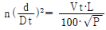
이용)- 약 3.9L/sec
- 약 2.4L/sec
- 약 1.4L/sec
- 약 0.6L/sec
(정답률: 44%)
54. 평판형 전기집진장치의 집진판 사이의 간격이 10cm, 가스의 유속은 3m/s, 입자의 집진극으로 이동속도가 7cm/s일 때, 층류영역에서 입자를 완전제거하기 위한 이론적인 집진극의 길이(m)는?
- 1.34m
- 2.14m
- 3.14m
- 4.29m
(정답률: 37%)
55. 유체의 운동을 결정하는 점도(Viscosity)에 대한 설명으로 옳은 것은?
- 온도가 증가하면 대게 액체의 점도는 증가한다.
- 액체의 점도는 기체에 비해 아주 크며, 대개 분자량이 증가하면 증가한다.
- 온도가 감소하면 대게 기체의 점도는 증가한다.
- 온도에 따른 액체의 운동점도(Kinematic Viscosity)의 변화폭은 절대점도의 경우보다 넓다.
(정답률: 70%)
56. 1atm, 20℃에서 공기 동점성계수 υ=1.5×10-5m2/s 일 때 관의 지름을 50mm로 하면 그 관로에서의 풍속(m/s)은? (단, 레이놀즈 수는 2.5×104 이다.)
- 2.5m/s
- 5.0m/s
- 7.5m/s
- 10.0m/s
(정답률: 48%)
57. 가솔린 자동차의 후처리에 의한 배출가스 저감방안의 하나인 삼원 촉매장치의 설명으로 가장 거리가 먼 것은?
- CO와 HC의 산화촉매로는 주로 백금(Pt)이 사용된다.
- NO의 환원촉매로는 주로 파라듐(Pd)이 사용된다.
- CO와 HC는 CO2와 H2O로 산화되며 NO는 N2로 환원된다.
- CO, HC, NOx 3성분의 동시 저감을 위해 엔진에 공급되는 공기연료비는 이론공연비 정도로 공급되어야 한다.
(정답률: 54%)
58. A먼지 배출공장에 집진율 80%인 사이클론과 집진율 98%인 전기집진장치를 직렬로 연결하여 설치하였다. 이 때 총 집진효율은?
- 89%
- 94.5%
- 97.2%
- 99.6%
(정답률: 58%)
59. 압력손실이 300mmH2O 이고, 처리가스량 45000m3/h인 집진장치의 송풍기 소요동력(kW)은? (단, 송풍기의 효율은 65%, 여유율은 1.3 이다.)
- 73.5kW
- 1342.7kW
- 4411.8kW
- 2647⑤.9kW
(정답률: 54%)
60. VOCs의 종류 중 지방족 및 방향족 HC의 적용 제어기술로 가장 거리가 먼 것은?
- 촉매소각
- 생물막
- 흡수
- UV 산화
(정답률: 55%)
4과목: 대기오염 공정시험기준(방법)
61. 비분산 적외선 분석법에서 용어 및 장치 구성에 관한 설명으로 틀린 것은?
- 비교가스는 시료셀에서 적외선 흡수를 측정하는 경우 대조가스로 사용하는 것으로 적외선을 흡수하지 않는 가스를 말한다.
- 제로 드리프트(Zero Drift)는 계기의 눈금스팬에 대응하는 지시치의 일정 기간내의 변동을 말한다.
- 광원은 원칙적으로 니크롬선 또는 탄화규소의 저항체에 전류를 흘려 가열한 것을 사용한다.
- 시료셀은 시료가스가 흐르는 상태에서 양단의 창을 통해 시료광속이 통과하는 구조를 갖는다.
(정답률: 38%)
62. A오염물질의 실측 농도가 250mg/Sm3이고, 이 때 실측 산소농도가 3.5%이다. A오염물질의 보정농도(mg/Sm3)는? (단, A오염물질은 표준산소농도를 적용받으며, 표준산소 농도는 4%이다.)
- 약 219 mg/Sm3
- 약 243 mg/Sm3
- 약 247 mg/Sm3
- 약 286 mg/Sm3
(정답률: 37%)
63. 폐기물 소각로 배출가스 중 다이옥신류 분석을 위한 시료채취방법에 관한 설명으로 가장 거리가 먼 것은?
- 흡인노즐에서 흡인하는 가스의 유속은 측정점의 배출가스유속에 대해 상태오차 -5∼+5%의 범위내로 한다.
- 배출가스 시료를 채취하는 동안에 각 흡수병은 냉각시켜야하며, XAD-2수지 포집관부는 80℃ 이하로 유지하여야 한다.
- 배출가스 처리장치의 다이옥신류 제거성능을 측정하고자 하는 경우는 원칙적으로 같은 시간에 실시하여야 하며, 처리장치에 주기성이 있으면 적어도 한주기보다 긴 시간에 걸쳐 측정한다.
- 여과지홀더 및 흡착관은 알루미늄호일 등으로 미리 차광시켜 둔다.
(정답률: 48%)
64. 다음 원자흡수분광광도법(원자흡광광도법)의 측정순서 중 일반적으로 가장 먼저 하여야 하는 것은?
- 분광기의 파장눈금을 분석선의 파장에 맞춘다.
- 광원램프를 점등하여 적당한 전류값을 설정한다.
- 가스유량 조절기의 밸브를 열어 불꽃을 점화한다.
- 시료용액을 불꽃중에 분무시켜 지시한 값을 읽어둔다.
(정답률: 53%)
65. 피토우관으로 굴뚝 배출가스를 측정한 결과 동압이 0.74mmHg였다. 이 때 배출가스의 평균유속은? (단, 굴뚝내의 습한 배출가스의 밀도는 1.3kg/m3, 피토우관 계수는 1.2이다.)
- 11.5m/sec
- 12.3m/sec
- 13.2m/sec
- 14.8m/sec
(정답률: 48%)
66. 굴뚝 배출가스 중의 황화수소를 용량법으로 분석하는 방법에 관한 설명으로 가장 거리가 먼 것은?
- 녹말지시약(1%)은 가용성 전분 1g을 소량의 물과 섞어 끓는 물 100mL중에 잘 흔들어 섞으면서 가하고, 약 1분간 끓인 후 식혀서 사용한다.
- 시료 중의 황화수소가 100 - 2000ppm 함유되어 있는 경우의 분석에 적합한 시료채취량은 10 - 20L 정도이다.
- 다른 산화성 및 환원성 가스에 의한 방해는 받지 않는 장점이 있다.
- 시료 중에 황화수소를 염산산성으로 하고, 요오드용액을 가하여 과잉의 요오드를 티오황산나트륨 용액으로 적정한다.
(정답률: 43%)
67. 굴뚝 배출가스 중 CS2를 자외선 가시선 분광법(흡광광도법)으로 분석하고자 할 때 사용되는 흡수액은?
- 붕산 용액
- 수산화나트륨 용액
- 디에틸아민동 용액
- 질산암모늄 용액
(정답률: 54%)
68. 이온크로마토그래피 설치조건(기준)으로 가장 거리가 먼 것은?
- 부식성 가스 및 먼지발생이 적고, 진동이 없으며 직사광선을 피해야 한다.
- 대형변압기, 고주파가열 등으로부터의 전자유도를 받지 않아야 한다.
- 실온 10∼25℃, 상대습도 30∼85% 범위로 급격한 온도변화가 없어야 한다.
- 공급전원은 기기의 사양에 지정된 전압 전기용량 및 주파수로 전압변동은 30% 이하이고, 급격한 주파수 변동이 없어야 한다.
(정답률: 50%)
69. 흡광광도법(Absorptiomertric Analysis)을 사용하여 어떤 시료의 발색액을 측정한 결과 투과퍼센트(T)가 80%이었다. 이 경우의 흡광도는?
- 약 0.⑤
- 약 0.1
- 약 0.2
- 약 0.7
(정답률: 45%)
70. 아연환원 나프틸에틸렌디아민법으로 굴뚝 배출가스 중 질소산화물을 분석하고자 할 때 아래와 같은 같은 과정을 거친다. (a)와 (b)안에 들어갈 알맞은 말은?
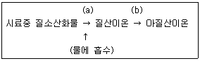
- (a) O3 (b) 분말금속아연
- (a) 공기 (b) 황산제이철염
- (a) CO2 (b) 황산제이철염
- (a) CO2 (b) 분말금속아연
(정답률: 40%)
71. 다음은 굴뚝연속자동측정기의 기능 중 측정범위에 관한 기준이다. ( )안에 가장 알맞은 것은?
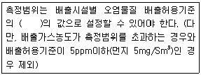
- 0.5 내지 2배 이내
- 2 내지 5배 이내
- 5 내지 10배 이내
- 10 내지 20배 이내
(정답률: 45%)
72. 환경대기 중 시료채취 위치선정방법으로 틀린 것은?
- 주위에 건물이나 수목 등의 장애물이 있을 경우에는 채취위치로부터 장애물까지의 거리가 그 장애물 높이의 2배 이상되는 곳을 선정한다.
- 주위에 건물이나 수목 등의 장애물이 있을 경우에는 채취점과 장애물 상단을 연결하는 직선이 수평선과 이루는 각도가 30°이하되는 곳을 선정한다.
- 주위에 건물 등이 밀집되어 있을 경우에는 건물 바깥벽으로부터 1.5m 이상 떨어진 곳을 선정한다.
- 시료채취높이는 그 부근의 최고오염도를 나타낼 수 있는 곳으로서 3∼5m 범위 이내로 한다.
(정답률: 29%)
73. 화학반응 공정 등에서 배출되는 굴뚝 배출가스 중 일산화탄소 분석방법에 따른 정량범위로 틀린 것은?
- 비분산 적외선 분석법 : 0∼250ppm부터 0∼1%
- 정전위 전해법 : 0∼200ppm부터 0∼2%
- 가스크로마토그래프법 : TCD의 경우 0.1% 이상
- 가스크로마토그래프법 : FID의 경우 0∼2000ppm
(정답률: 38%)
74. 다음은 환경대기 중 아황산가스 농도 측정을 위한 파라로자닐린법(Pararosaniline Method)에 관한 설명이다. ( )안에 알맞은 것은?
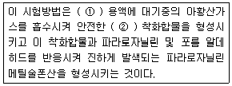
- ① 이염화수은 나트륨, ② 사염화 아황산수은염
- ① 사염화수은 나트륨, ② 이염화 아황산수은염
- ① 이염화수은 칼륨, ② 사염화 아황산수은염
- ① 사염화수은 칼륨, ② 이염화 아황산수은염
(정답률: 47%)
75. 가스크로마토그래프법에 관한 설명으로 가장 적합한 것은?
- 분리관오븐의 온도조절 정밀도는 ±0.5℃의 범위이내 전원 전압변동 10%에 대하여 온도변화 ±0.5℃ 범위이내이어야 한다. (오븐의 온도가 150℃ 부근일 때)
- 열전도도형 검출기에서 운반가스는 일반적으로 순도 99% 이상의 질소나 헬륨을 사용한다.
- 일반적으로 5∼30분 정도에서 측정하는 피이크의 보유시간은 반복시험을 할 때 ±5% 오차범위이내이어야 한다.
- 검출한계는 각 분석방법에서 규정하는 조건에서 출력신호를 기록할 때, 잡음신호의 3배의 신호를 검출한계로 한다.
(정답률: 44%)
76. 자외선 가시선 분광법(흡광광도법)에서 미광(Stray Light)의 유무조사에 사용되는 것은?
- 홀뮴유리
- 간섭램프
- 단색화장치
- 컷트필터
(정답률: 44%)
77. 가스크로마토그래프법에서 이론단수가 3260인 분리관이 있다. 보유시간이 20분일 때, 피크의 좌우 변곡점에서 접선이 자르는 바탕선의 길이는? (단, 기록지 이동속도는 5mm/min이고, 이론단수는 모든 성분에 대하여 같다.)
- 7mm
- 9mm
- 11mm
- 13mm
(정답률: 39%)
78. 굴뚝배출가스의 시료채취 시 분석대상가스별 흡수액과의 연결로 옳지 않은 것은?
- 불소화합물 - 수산화나트륨용액(0.1N)
- 황화수소 - 아세틸아세톤용액(0.2N)
- 벤젠 - 질산암모늄 + 황산(1→5)
- 브롬화합물 - 수산화나트륨용액(0.4W/V%)
(정답률: 34%)
79. 굴뚝 배출가스 중 불소화합물을 란탄 - 알리자린 콤플렉숀법에 의하여 분석할 때 사용되지 않는 시약은?
- 암모니아수
- 초산암모늄용액
- 아세톤
- 술폰산나트륨
(정답률: 25%)
80. 원자흡수분광광도법(원자흡광광도법)으로 분석하기 위해 채취한 시료의 성상에 따른 처리방법으로 거리가 먼 것은?
- 타르 기타 소량의 유기물을 함유하는 것 : 질산 - 과산화수소수법
- 셀룰로스 섬유제 여과지를 사용한 것 : 저온회화법
- 다량의 유기물 유리탄소를 함유하는 것 : 질산 - 염산법
- 유기물을 함유하지 않는 것 : 질산법
(정답률: 39%)
5과목: 대기환경관계법규
81. 대기환경보전법령상 대기오염경보단계 중 ”중대경보발령”의 경우 조치하여야 하는 사항과 가장 거리가 먼 것은?
- 사업장의 연료사용량 감축 권고
- 주민의 실외활동 금지요청
- 자동차의 통행금지 명령
- 사업장의 조업시간 단축명령
(정답률: 46%)
82. 대기환경보전법령상 굴뚝 자동측정기기 부착대상 배출시설이 그 부착을 면제받을 수 있는 경우로 거리가 먼 것은?
- 연소가스 또는 화염이 원료 또는 제품과 직접 접촉하지 아니하는 시설로서 규정에 따른 청정연료를 사용하는 경우(발전시설은 제외한다.)
- 부착대상시설이 된 날부터 6개월 이내에 배출시설을 폐쇄할 계획이 있는 경우
- 연간 가동일수가 60일 미만인 배출시설인 경우
- 액체연료만을 사용하는 연소시설로서 황산화물을 제거하는 방지시설이 없는 경우(발전시설은 제외하며, 황산화물 측정기기에만 부착을 면제한다.)
(정답률: 30%)
83. 대기환경보전법상 도시지역의 대기질 개선을 위하여 그 지역에서 운행 중인 경유자동차 중 대기오염물질 배출정도 등에 관해 환경부령으로 정하는 요건을 충족하는 자동차의 소유자에게 시·도지사가 행할 수 있는 조치명령 항목으로 가장 거리가 먼 것은?
- 저공해자동차로의 전환
- 초저유황유로서 사용전환
- 배출가스저감장치의 부착
- 저공해엔진으로의 개조
(정답률: 28%)
84. 대기환경보전법규상 암모니아의 각 배출시설별 배출허용기준으로 옳지 않은 것은? (단, 배출허용기준란의 ( )는 표준산소농도(O2의 백분율)이며,“고형연료제품 사용시설”은 자원의 절약과 재활용 촉진에 관한 법률에 따른 해당시설로서 연료사용량 중 고형연료제품 사용비율이 30% 이상인 시설을 말한다.)
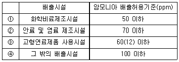
- ①
- ②
- ③
- ④
(정답률: 31%)
85. 환경정책기본법령상 SO2의 대기환경기준으로 옳은 것은? (단, ① 연간평균치, ② 24시간평균치, ③ 1시간평균치)
- ① 0.03ppm 이하, ② 0.06ppm 이하, ③ 0.10ppm 이하
- ① 0.02ppm 이하, ② 0.⑤ppm 이하, ③ 0.15ppm 이하
- ① 0.⑤ppm 이하, ② 0.10ppm 이하, ③ 0.12ppm 이하
- ① 0.06ppm 이하, ② 0.10ppm 이하, ③ 0.12ppm 이하
(정답률: 60%)
86. 환경정책기본법령상 미세먼지(PM-10)의 대기환경기준은? (단, 연간평균치 기준)
- 5㎍/m3 이하
- 25㎍/m3 이하
- 50㎍/m3 이하
- 100㎍/m3 이하
(정답률: 39%)
87. 대기환경보전법규상 시 도지사는 정밀검사업무를 대행하는 지정사업자가 고의로 검사업무를 부실하게 한 경우 업무정지처분에 갈음하여 과징금을 산정하여 부과 할 수 있는데, 그 과징금 산정기준으로 옳지 않은 것은? (단, 월 평균검사대수는 재검사대수를 제외한다.)
- 과징금은 1개월당 과징금액에 해당 업무정지월수를 곱한 금액으로 하되, 5천만원을 초과할 수 없다.
- 월 평균검사대수가 360대 미만인 경우 과징금의 금액은 720만원이다.
- 월 평균검사대수는 위반행위가 있는 날 이전 최근 6개월간의 평균검사대수로 하되, 사업기간이 6개월 미만인 경우는 사업개시일부터 위반행위를 한 날의 전날까지의 평균검사대수를 기준으로 하되, 월 근무일수는 25일로 계산한다.
- 월 평균검사대수가 1800대를 초과하는 경우에는 초과하는 100대마다 200만원을 추가하여 부과한다.
(정답률: 32%)
88. 대기환경보전법상 변경인증을 받아야 하는 자가 제작차 배출허용기준과 관련한 변경인증을 받지 아니하고 자동차를 제작한 자에 대한 벌칙기준은?
- 10년 이하의 징역이나 2억원 이하의 벌금
- 5년 이하의 징역이나 3천만원 이하의 벌금
- 1년 이하의 징역이나 500만원 이하의 벌금
- 6개월 이하의 징역이나 200만원 이하의 벌금
(정답률: 36%)
89. 대기환경보전법령상 대기배출부과금이 납부의무자의 자본금 또는 출자총액을 2배 초과하는 경우로서 규정에 의한 징수유예기간 내에도 징수할 수 없다고 인정되면 징수유예기간을 연장하거나 분할납부의 횟수를 늘려 부과금을 내도록 할 수 있는데, 다음 중 연장된 징수유예기간 ( ① )과 분할납부횟수( ② ) 기준으로 옳은 것은?
- ①유예한 날의 다음날부터 1년 이내, ② 6회 이내
- ①유예한 날의 다음날부터 1년 이내, ② 12회 이내
- ①유예한 날의 다음날부터 3년 이내, ② 6회 이내
- ①유예한 날의 다음날부터 3년 이내, ② 12회 이내
(정답률: 45%)
90. 대기환경보전법규상 대기오염물질 배출시설기준으로 틀린 것은?
- 펄프, 종이 및 종이제품 제조시설 중 용적이 3세제곱미터 이상이 증해시설
- 반도체 및 기타 전자부품 제조시설 중 용적이 3세제곱미터 이상인 증착시설
- 섬유제품 제조시설 중 연료사용량이 시간당 30킬로그램 이상이거나 용적이 3세제곱미터 이상인 다림질(텐트)시설
- 고무 및 플라스틱제품 제조시설 중 용적이 3세제곱미터 이상이거나 동력이 10마력 이상인 정련시설
(정답률: 37%)
91. 대기환경보전법령상 황함유기준에 부적합한 유류를 판매하여 그 해당 유류의 회수처리명령을 받은 자는 환경부장관등에게 그 명령을 받은 날부터 최대 며칠이내에 이행완료보고서를 제출하여야 하는가?
- 5일 이내
- 7일 이내
- 10일 이내
- 30일 이내
(정답률: 56%)
92. 대기환경보전법령상 화사대책위원회의 위원 중 학식과 경험이 풍부한 전문자 중 “대통령령으로 정하는 분야”와 가장 거리가 먼 것은?
- 산림분야
- 예방의학 분야
- 산업안전 분야
- 국제협력 분야 및 언론 분야
(정답률: 41%)
93. 대기환경보전법령상 연료를 연소하여 황산화물을 배출하는 시설의 기본부과금의 농도별 부과계수로 옳은 것은? (단, 연료의 황함유량(%)은 0.5% 이하로서, 황산화물의 배출량을 줄이기 위하여 방지시설을 설치한 경우와 생산공정상 황산화물의 배출량이 줄어든다고 인정하는 경우 제외)
- 0.1
- 0.2
- 0.4
- 1.0
(정답률: 48%)
94. 다중이용시설 등의 신내공기질관리법령상 이 법의 적용대상이 되는 시설 중 “대통령령이 정하는 규모의 것”에 해당하지 않는 것은?
- 여객자동차터미널의 연면적 1천 5백제곱미터 이상이 대합실
- 공항시설중 연면적 1천 5백제곱미터 이상인 여객터미널
- 연면적 430제곱미터 이상인 국공립보육시설, 법인보육시설, 직장보육시설 및 민간보육시설
- 연면적 2천제곱미터 이상이거나 병상수 100개 이상인 의료기관
(정답률: 12%)
95. 다음은 대기환경보전법령상 환경기술인의 임명기준이다. ( )안에 알맞은 것은? (단, 1급, 2급은 각각 기사, 산업기사와 동일하다.)
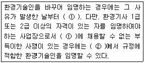
- ① 5일 이내, ② 30일의 범위
- ① 5일 이내, ② 60일의 범위
- ① 10일 이내, ② 30일의 범위
- ① 10일 이내, ② 60일의 범위
(정답률: 33%)
96. 대기환경보전법규상 측정기기의 부착,·운영 등과 관련된 행정처분기준 중 굴뚝 자동측정기기의 부착이 면제된 보일러(사용연료를 6개월 이내에 청정연료로 변경할 계획이 있는 경우)로서 사용연료를 6월 이내에 청정연료로 변경하지 아니한 경우의 3차 행정처분기준으로 가장 적합한 것은?
- 조업정지 10일
- 조업정지 30일
- 조업정지 5일
- 경고
(정답률: 34%)
97. 다음은 대기환경보전법규상 환경부령으로 정하는 첨가제 제조기준에 맞는 제품의 표시방법이다. ( )안에 알맞은 것은?
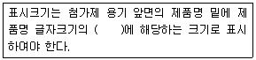
- 100분의 10 이상
- 100분의 20 이상
- 100분의 30 이상
- 100분의 50 이상
(정답률: 59%)
98. 대기환경보전법규상 특정대기유해물질이 아닌 것은?
- 황화수소
- 아크릴로니트릴
- 염소 및 염화수소
- 히드라진
(정답률: 55%)
99. 대기환경보전법규상 대기오염물질배출시설 중 공통시설 기준으로 틀린 것은? (단, 기타사항 제외)
- 동력 20말겨 이상인 분쇄시설(다만, 습식 및 이동식은 제외)
- 소각시설 중 연료사용량이 시간당 25킬로그램 이상인 생활폐기물 고형연료제품(RDF) 전용시설
- 용적이 50세제곱미터 이상인 유·뮤기산 저장시설
- 포장능력이 시간당 100킬로그램 이상인 고체입자상물질 포장시설
(정답률: 40%)
100. 대기환경보전법규상 유역환경청장, 지방환경청장 또는 수도권대기환경청장이 설치하는 대기오염 측정망의 종류가 아닌 것은?
- 도시지역의 휘발성 유기화합물 등의 농도를 측정하기 위한 광화학대기오염물질측정망
- 기후·생태계변화 유발물질의 농도를 측정하기 위한 지구대기측정망
- 도시의 시정장애의 정도를 파악하기 위한 시정거리 측정망
- 대기오염물질의 지역배경농도를 측정하기 위한 교외대기 측정망
(정답률: 34%)
"지구의 위도별 CO 농도는 남위 50도 부근에서 최대치를 보인다."의 이유는 이 지역에서는 산림 화재, 산불, 화석 연료 연소 등의 인위적인 배출물 외에도 자연적으로 발생하는 CO가 많기 때문이다. 또한 이 지역은 대기순환에 영향을 미치는 북극 극지방과 아열대 지역 사이에 위치하여 대기 확산이 어렵기 때문에 CO가 쌓이기 쉽다.